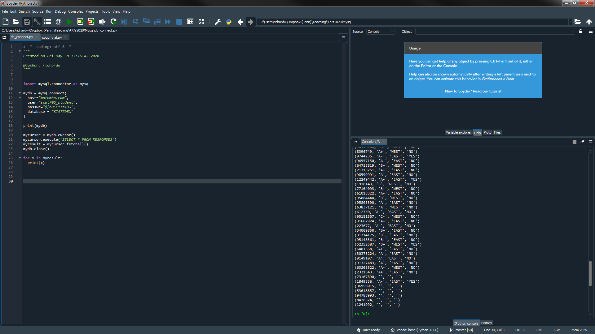
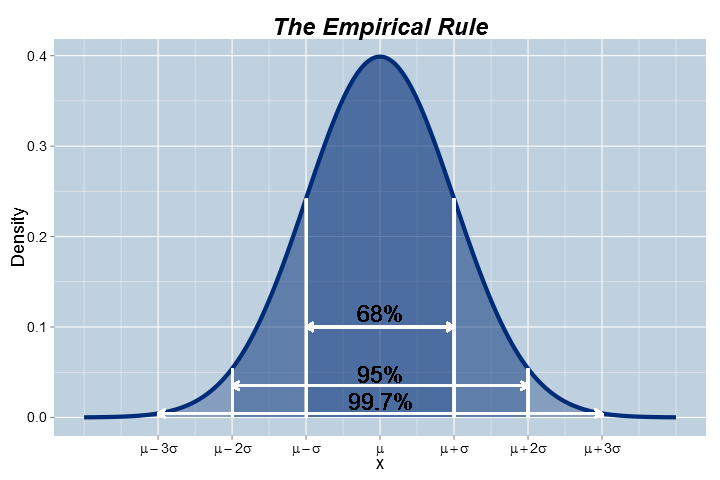
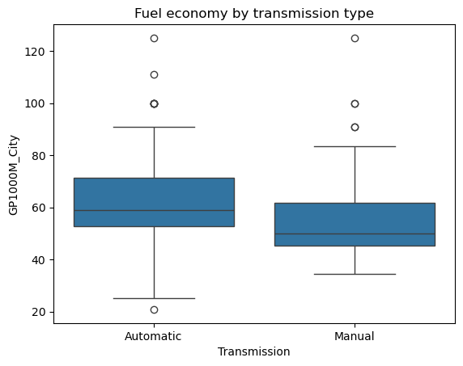
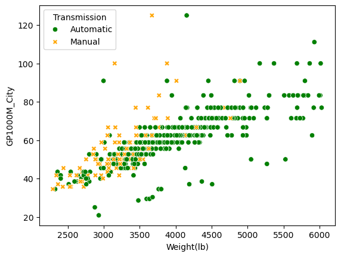
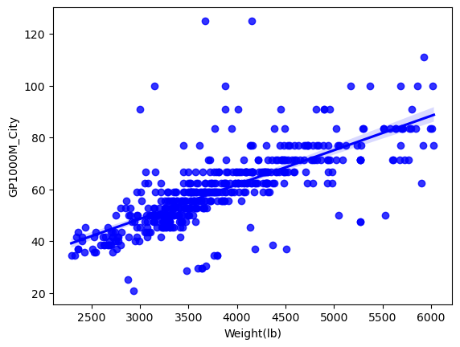
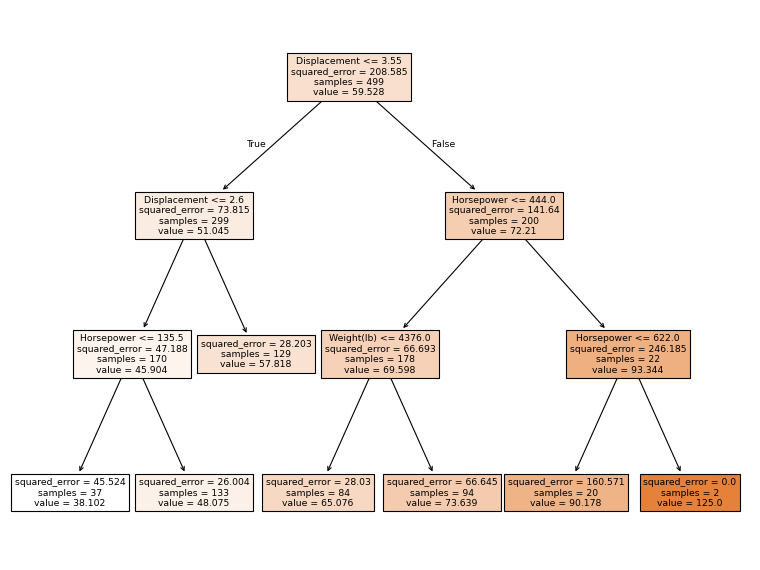

Richard Waterman
August 2026

import pandas as pd
import os
from sklearn import tree
# This is where the data lives:
os.chdir('C:\\Users\\water\\Dropbox (Penn)\\Richard\\Teaching\\7770f2026_Q1\\DataSets')
#print(os.getcwd())
carTable = pd.read_csv("Car08_just_499.csv")
print(carTable) Make/Model MPG_City MPG_Hwy Weight(lb) Seating Horsepower HP/Pound \
0 Acura_RL 16 24 4014 5 290 0.072247
1 Acura_TL 17 26 3674 5 286 0.077844
2 Acura_TL 18 27 3559 5 286 0.080360
3 Acura_TSX 20 28 3345 5 205 0.061285
4 Acura_TSX 19 28 3257 5 205 0.062941
.. ... ... ... ... ... ... ...
494 Volvo_V50 20 28 3321 5 168 0.050587
495 Volvo_V70 16 24 3527 5 235 0.066629
496 Volvo_XC90 14 20 4356 5 235 0.053949
497 Volvo_XC70 15 22 4092 5 235 0.057429
498 Volvo_XC90 13 19 4826 7 311 0.064443
Displacement Cylinders Origin Transmission EPA_Class Length Fuel \
0 3.5 6 3 AS midsize 193.6 gas
1 3.5 6 3 AS midsize 189.3 gas
2 3.5 6 3 M midsize 189.3 gas
3 2.4 4 3 AS compact 186.2 gas
4 2.4 4 3 M compact 186.2 gas
.. ... ... ... ... ... ... ...
494 2.4 5 2 AS smallwagon 178.0 gas
495 3.2 6 2 AS midsizewagon 189.9 gas
496 3.2 6 2 AS suv2 189.3 gas
497 3.2 6 2 AS suv4 190.5 gas
498 4.4 8 2 AS suv4 189.3 gas
HEV Turbocharger Make Model GP1000M_City GP1000M_Hwy
0 no no Acura RL 62.500000 41.666667
1 no no Acura TL 58.823529 38.461539
2 no no Acura TL 55.555556 37.037037
3 no no Acura TSX 50.000000 35.714286
4 no no Acura TSX 52.631579 35.714286
.. .. ... ... ... ... ...
494 no no Volvo V50 50.000000 35.714286
495 no no Volvo V70 62.500000 41.666667
496 no no Volvo XC90 71.428571 50.000000
497 no no Volvo XC70 66.666667 45.454546
498 no no Volvo XC90 76.923077 52.631579
[499 rows x 20 columns]# In the terminal or powershell type 'pip install pymysql', to install mysql connector
import warnings
warnings.filterwarnings("ignore") # Turn off warnings
import pymysql
conn = pymysql.connect(
host='mathmba.com', # Hostname for local machine
user='stat705_student', # Replace with your MySQL username
password='$[h0CC*TtKO~', # Replace with your MySQL password
database='STAT705X' # Replace with your database name
)
survey_from_db = pd.read_sql("SELECT * FROM RESPONSES", conn, index_col='MYID')
print(type(survey_from_db)) # Confirm we have a data frame.
<class 'pandas.core.frame.DataFrame'> Q1 Q2 Q3
MYID
98616981 B EAST YES
31004395 A EAST NO
42889147 A- EAST NO
3215038 A EAST NO
21698690 B+ EAST NOMaking inferences:

# Recode the levels of a categorical variable
print(carTable['Transmission'].value_counts())
recodes = {'A':'Automatic','AS':'Automatic','AV':'Automatic', 'M':'Manual'}
carTable['Transmission'] = carTable['Transmission'].map(recodes)
print(carTable.Transmission.value_counts())Transmission
A 217
AS 129
M 122
AV 31
Name: count, dtype: int64
Transmission
Automatic 377
Manual 122
Name: count, dtype: int64import matplotlib.pyplot as plt
import seaborn as sns
sns.boxplot(x = 'Transmission', y = 'GP1000M_City', data = carTable)
plt.title('Fuel economy by transmission type')Text(0.5, 1.0, 'Fuel economy by transmission type')

sns.scatterplot(x = 'Weight(lb)', y = 'GP1000M_City', hue='Transmission', data=carTable, style='Transmission',
palette=['green','orange'], legend='full');

# A scatterplot with the linear regression line and confidence bands
sns.regplot(x=carTable['Weight(lb)'], y=carTable['GP1000M_City'], color ='blue');


import numpy as np # The key library
from PIL import Image # PIL is an image processing library
os.chdir('C:\\Users\\water\\Dropbox (Penn)\\Richard\\Teaching\\4770f2025_Q1\\Notes\\images')
im = Image.open("sophy_bw.bmp") # Open up Sophy's image.
sophy = np.array(im) # Turn Sophy's image into a numpy array.
print(sophy.shape) # Confirm her shape.
sophy[128:160, 128:160] # Review a small piece of Sophy (256, 256)
array([[False, False, False, ..., True, True, True],
[False, False, False, ..., True, True, True],
[False, False, False, ..., True, True, True],
...,
[ True, True, True, ..., True, True, True],
[ True, True, True, ..., True, True, True],
[ True, True, True, ..., True, True, True]], shape=(32, 32))